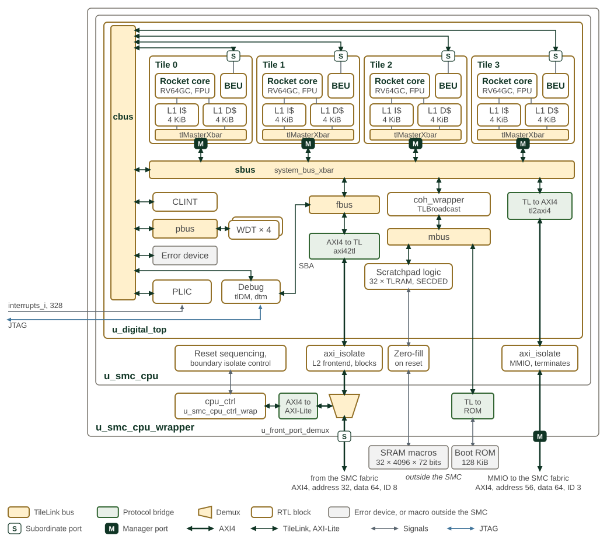

CPU
The SMC CPU subsystem contains four Rocket RV64GC cores, each with private instruction and data caches. The cores share a 1 MiB scratchpad and a 128 KiB boot ROM through the Chipyard-generated TileLink interconnect. AXI4 bridges connect the cluster to the SMC fabric.
This chapter describes the generated configuration, memory interfaces and CPU reset boundary. The Rocket Chip documentation provides background on the core and generator.
Figure 1 shows the CPU cluster, memory hierarchy, and fabric bridge.

The figure separates three implementation boundaries:
-
u_digital_topcontains the generated cluster and TileLink buses. -
u_smc_cpuadds AXI isolation, reset sequencing and scratchpad zero-fill. -
u_smc_cpu_wrapperadds the front-port demultiplexer,cpu_ctrlregisters and boot ROM bridge.
Each tile connects to the system bus (sbus) as a manager and to the control
bus (cbus) through its Bus Error Unit (BEU) subordinate port. Debug system
bus accesses and the L2 frontend port enter sbus through the front bus
(fbus). The coherence manager (coh_wrapper, a TileLink broadcast hub)
connects to the memory bus (mbus), which serves the scratchpad and boot ROM.
The PLIC receives four watchdog and four BEU interrupt sources; these paths
are omitted from the figure.
Thick lines denote AXI4; thin dark lines denote TileLink, except for the
AXI-Lite link to cpu_ctrl. The scratchpad contains 32 TLRAM banks with SECDED
encode/decode logic. The SRAM macros, L1 tag/data arrays and boot ROM macro
sit outside SMC. Memory interface ports carry their requests through the SMC
boundary, including one 72-bit port for each scratchpad bank.
1. Processor Core
Table 1 summarizes the processor configuration.
| Attribute | Description |
|---|---|
Cores |
4, Rocket RV64GC |
Base ISA |
RV64GC (I, M, A, F, D, C extensions) |
Additional configured extensions |
Zba, Zbb, Zbs and conditional-zero instructions |
Microarchitecture |
In-order, 5-stage pipeline |
Privilege Levels |
M/S/U |
Phys. Address |
56 bits |
Reset Vector |
Per-core, independently configurable (56b) |
2. Local Memory
Table 2 lists the memory geometry in the generated cluster and the associated macro controls.
| Component | Configured Size | Protection / role | Macro controls |
|---|---|---|---|
L1 I-Cache per core |
4 KiB (32 sets × 2 ways) |
Read-only instruction cache; tag/data parity |
|
L1 D-Cache per core |
4 KiB (32 sets × 2 ways) |
Write-back data cache; tag/data SECDED ECC |
|
Local SRAM/Scratchpad |
1 MiB (32 banks) |
Shared local memory; SECDED ECC |
|
Boot ROM |
128 KiB |
Read-only, stores boot firmware |
|
The sizes and associativity above are set by the Chipyard configuration and
its generated memory interfaces. Changing them requires a matching generated
cluster and memory implementation. The *_cfg signals configure the external
memory macros; they are passed unchanged to each macro and do not resize
caches or the scratchpad. Macro-specific repair and power controls depend on
the selected memory implementation.
The cluster uses TileLink internally for the scratchpad and boot ROM, for
the PLIC, CLINT and BEUs on the control bus, and for watchdog timers on the
peripheral bus. At its boundary, the MMIO manager bridge converts TileLink
to AXI4; the L2 frontend bridge converts incoming AXI4 to TileLink. The
front-port branch serving cpu_ctrl uses AXI4-Lite. Both AXI4 ports connect
to the SMC
Fabric.
3. Reset and Boot
CPU_CTRL.RESET_CTRL provides per-core reset controls and reset-pulse
requests, plus separate uncore and debug-module reset controls. Each core has
a 56-bit RESET_VECTOR register, reset to the boot ROM base 0xC004_0000.
The wrapper supplies these values to the generated cluster. While warm reset
is asserted, it selects 0xC004_0000 instead of the programmed vectors.
Individual core reset clears the core’s private L1 cache and TileLink client state without resetting the shared coherence manager. The current SMC Rocket integration provides no reset-aware coherence mechanism to drain outstanding transactions or preserve dirty cache data. The AXI boundary drain described below does not remove this limitation.
The scratchpad zero-fill sequencer starts when its memory-initialization reset
releases. It writes zeros across the scratchpad banks and holds the cores in
reset until initialization completes. smc_disable_sram_auto_init_i bypasses
this operation. smc_init_mem_done_o reports either completion or bypass;
it does not certify memory repair, MBIST success or initialized contents when
zero-fill is skipped. The integrator must provide suitable memory contents
and ECC state before use when bypassing initialization.
4. Memory Repair
Memory repair and memory built-in self-test (MBIST) are external DFT responsibilities. The external repair controller applies redundant memory elements as required by the selected SRAM implementation. The SMC fuse map provides no repair-data storage; the integrator supplies the repair data and its storage location.
The intended cold-boot sequence is fuse sensing, external repair, then MBIST before normal CPU use. SMC supplies the following sequencing and status interfaces; it does not implement the external repair algorithm.
smc_fuse_sense_done_o-
Signals completion of fuse sensing into shadow registers. External DFT logic can use it to begin the repair/MBIST sequence.
ext_boot_seq_done_i-
Reports completion of the external boot sequence. Its qualified value gates fuse-reset release together with fuse sensing; the repair and MBIST status bits themselves are not this handshake.
skip_mem_repair_o-
Asserted by the synchronized isolation pin or the FLR-set
ISOLATE_REQ_SMC_REGlatch. Software writes can clear this latch but cannot set it. A request through the separateISOLATE_REQ_REGregister does not assert this output. External logic determines how it bypasses repair/MBIST. BYPASS_SRAM_REPAIR(STRAPS_LO[13])-
Requests repair bypass. The ROM skips its repair-status check when this strap is set; the external integration owns the repair bypass behavior.
mem_repair_done/mem_repair_success-
External completion and success status, visible in
DFX_CTRL_STATUS.STATUS_SMUat0xC000_B800.
The ROM checks repair status during early startup, before normal stack use.
It treats a clear mem_repair_done as repair not required rather than waiting
for completion. When repair reports done, the ROM checks success; the
SMC_CONFIG DFT-ignore-error setting can permit boot to continue after a
reported failure. These firmware checks do not establish that repair has
completed successfully. The external sequencer must enforce the platform’s
repair and MBIST requirements before reporting boot-sequence completion.
5. System Interfaces
Table 3 identifies the protocols and roles of the CPU cluster interfaces.
| Interface | Protocol | Description |
|---|---|---|
MMIO |
AXI4 |
Manager port to the SMC fabric; 56-bit address, 64-bit data, 3-bit ID |
L2 Frontend |
AXI4 |
Subordinate port into the cluster through the front bus; 32-bit SMC-local address, 64-bit data, 8-bit ID |
Debug |
JTAG |
JTAG debug transport module into the debug module on the control bus; system bus access through the front bus |
6. CPU AXI Isolation
The cluster is reset independently of the surrounding SMC fabric.
If the cluster were reset while a transaction on one of its AXI ports
was still in flight, the fabric on the other side would be left
waiting on a response that never returns, hanging the bus, and could
sample boundary signals while they glitch through reset. To avoid this, each
AXI port is wrapped in an axi_isolate block that drains the outstanding
transactions and holds the boundary at safe values before the reset is allowed
to take effect.
Two instances wrap the AXI ports listed above, each sized for up to four outstanding transactions:
-
the L2 frontend slave port, which blocks new transactions rather than terminating them, and
-
the MMIO master port, which terminates new transactions presented while isolated with SLVERR responses to keep reset-time X values from propagating into the fabric.
The non-AXI status crossings (wb_pc_valid, wb_reg_pc, and the per-core
wdt_reset) are clamped to constants over the same window so they cannot leak
glitches either. The boundary also self-isolates on cold boot, releasing four
cycles after SRAM initialization completes and the cores and uncore are out of
reset.
The boundary is shared by all cores and stays isolated while any core or the uncore is in reset. Holding one core in reset therefore also terminates the other cores' MMIO accesses with SLVERR and stalls L2 frontend traffic until every core is released.
6.1. Drain Handshake
The
per-core reset sequence
in the Programmer’s Guide gives the firmware steps. A software reset through CPU_CTRL.RESET_CTRL, whether a core or uncore reset
bit or a core reset pulse, proceeds as follows:
-
Firmware writes
RESET_CTRL. -
The control logic (
smc_cpu_ctrl_wrap) raisesisolate_req_iand withholds the reset. -
Both
axi_isolateinstances drain their outstanding transactions and isolate. -
The cluster raises
drained_o, and the control logic applies the reset. -
isolate_req_istays high until every reset bit is released and every pulse completes. The boundary then reconnects.
6.2. Timeout Recovery
CPU_CTRL.RESET_TIMEOUT limits how long a software-requested reset waits for
the drain handshake. A timeout_value of zero disables the timer. When the
timer expires, timeout_mode=0 reports the timeout and continues to withhold
the reset. timeout_mode=1 forces the reset and flushes both AXI isolation
blocks.
reset_timeout remains high until the software reset request is removed,
including after a recovery flush completes. reset_applied is high once the
reset is applied by a completed drain or a force-mode timeout.
The flush clears outstanding-transaction records at the cluster boundary and discards late responses and write data until isolation is released. This lets the reset complete when the CPU cluster is unresponsive but the surrounding fabric remains operational.
|
The flush cannot cancel an address request or write-data beat while The flush clears only the CPU isolation blocks. It does not clear state elsewhere in the SMC fabric. The cluster reset may complete while another block remains unresponsive or holds a response, leaving that route or AXI ID blocked, so that block must be recovered separately or through the eventual cold reset. |
6.3. Reset-Domain Crossing
The flops driving the isolate-control logic are held by the cluster’s
uncore/core reset, while the flops inside axi_isolate are held by the Primary
Reset (see
Clock and Reset Management
). The
uncore/core reset is driven from two sources:
-
a Warm Reset from a watchdog timeout, which is asynchronous to the isolate logic, and
-
a CPU CSR write (the reset-control register in
smc_cpu_ctrl_wrap), which is synchronous.
Because the two sets of flops sit in different reset domains, the asynchronous
warm-reset path is a reset-domain crossing into axi_isolate. This is
acceptable: only the watchdog asserts the warm reset asynchronously, and a
watchdog timeout is followed by a cold reset, so the
brief crossing window has no functional consequence. The CSR path is
synchronous and crosses no domains.
7. Interrupt Integration
All interrupt wiring—MMIO bases for PLIC, CLINT, watchdog, and bus-error
units; the authoritative cpu_interrupts_o map; PLIC/CLINT register
documentation; and BEU direct interrupt delivery—is documented in
Interrupts.
8. Watchdog Interface
Each core has a watchdog. See Watchdog Timers for operation and the register reference.
9. Bus Error Reporting
Each core has a Bus Error Unit (BEU) at 0xC801_0000 + N * 0x1000, for
N = 0 through 3. It reports errors seen by that core’s L1 caches:
-
instruction-cache correctable errors,
-
instruction-cache bus errors,
-
data-cache correctable errors,
-
data-cache uncorrectable errors, and
-
data-cache bus errors.
An error response from the SMC fabric reaches the BEU only as a cache bus error; the BEU does not distinguish decode, slave or timeout errors. It is not a general AXI transaction monitor and has no independent AXI timeout detector or transaction-data log.
ENABLE selects events that capture CAUSE and PHYS_ADDR while CAUSE
is zero. Instruction-cache correctable errors capture a physical address
of zero. The register named ACCRUED_ENABLE is instead sticky event status:
events accumulate independently of ENABLE, and ordinary software writes
replace the bits. PLIC_ENABLE and LOCAL_ENABLE select from that accrued
status for the PLIC and direct-core interrupt paths. Capture the diagnostic
state before clearing status or rearming cause capture. The generated
register map below lists the implemented fields. Delivery and clearing
are described in
Bus Error Units.
10. Debug
The generated memory map below describes the hart-facing Debug Module memory
region. Only the harts of the CPU cluster reach it, over the cluster’s own control
bus. The SMC fabric does not route it, so system, SEP and other SMC initiators
receive DECERR at every address in the region. Debugger-facing registers such as
dmcontrol, dmstatus, abstractcs and sbcs are accessed through the Debug
Module Interface (DMI), not through that memory region.
Section 10.1 describes them.
JTAG reaches the cluster’s debug transport module and debug module. The
configured debug facilities provide per-core register access, program-buffer
execution, breakpoints and system bus access. Debug system bus transactions
enter through fbus and use the cluster’s interconnect and reset/isolation
conditions.
Debug-module reset is separately controlled by CPU_CTRL.RESET_CTRL; its
reset value holds the debug module in reset. Separate control does not make
debug memory accesses independent of cluster reset or boundary isolation.
Per-core boot addresses are controlled by the RESET_VECTOR registers
described above.
10.1. Debug Module Configuration
The Debug Module implements version 0.13 of the RISC-V External Debug Support specification for the four harts of the CPU cluster. A debugger discovers its configuration by reading DMI registers. Table 4 lists the fixed capability values those registers return, and Table 5 lists which DMI registers are implemented.
| Register | Field | Value | Meaning |
|---|---|---|---|
|
|
2 |
Debug Specification 0.13 |
|
|
1 |
No authentication is required |
|
|
1 |
Halt-on-reset is supported |
|
|
0 |
No configuration string |
|
|
1 |
An implicit |
|
|
2 bits |
Harts 0 to 3; |
|
|
16 |
|
|
|
4 |
|
|
|
4 bits |
Auto-execution from |
|
|
16 bits |
Auto-execution from |
|
|
1 |
System bus access as defined by Debug Specification 0.13 |
|
|
56 |
System bus address width in bits |
|
|
1 |
8-, 16-, 32- and 64-bit system bus accesses |
|
|
0 |
No 128-bit system bus access |
The command register accepts only the Access Register command (cmdtype 0).
With transfer set, Access Register reaches the general-purpose registers x0 to
x31 (regno 0x1000 to 0x101F) with an aarsize of 2 or 3 (32 or 64 bits). With
transfer clear, any regno and size is accepted. Any other command type, and
any transfer outside those registers and sizes, sets abstractcs.cmderr to 2
(not supported). The
debugger reaches CSRs and floating-point registers by executing instructions from
the program buffer. Reading command returns the last value written.
hawindowsel reads 0 and ignores writes, so hawindow bits 3:0 hold the hart
array mask for harts 0 to 3. setresethaltreq and clrresethaltreq in
dmcontrol set and clear halt-on-reset for the selected harts.
DMI address 0x32 provides the halt-group fields of the dmcs2 register, which
later versions of the specification define. A write with hgwrite set,
hgselect clear and haltgroup 0 or 1 removes the selected harts from halt
group 1 or adds them to it. When one hart in halt group 1 halts, the Debug Module
halts the other harts in that group. A read returns the group of the hart selected
by hartsel in haltgroup. External trigger groups (hgselect set) are not
supported.
DMI registers that the Debug Module does not implement read as 0 and ignore writes.
| DMI address | Register | Implementation |
|---|---|---|
0x04-0x07 |
|
Implemented |
0x08-0x0F |
|
Not implemented |
0x10 |
|
Implemented; |
0x11 |
|
Implemented |
0x12 |
|
Not implemented |
0x13 |
|
Implemented; bit 0 only |
0x14 |
|
Reads 0 |
0x15 |
|
Implemented; bits 3:0 only |
0x16 |
|
Implemented |
0x17 |
|
Implemented; Access Register only |
0x18 |
|
Implemented; |
0x19-0x1C |
|
Not implemented |
0x1D |
|
Not implemented; this is the only Debug Module |
0x20-0x2F |
|
Implemented |
0x30 |
|
Not implemented |
0x32 |
|
Implemented; halt groups 0 and 1 only |
0x34 |
|
Not implemented |
0x35 |
|
Not implemented |
0x37 |
|
Not implemented |
0x38 |
|
Implemented |
0x39-0x3A |
|
Implemented |
0x3B |
|
Not implemented |
0x3C-0x3D |
|
Implemented |
0x3E-0x3F |
|
Not implemented |
0x40 |
|
Implemented; bits 3:0 only |
10.2. Abstract Command Writes While cmderr Is Set
The Debug Module departs from the RISC-V External Debug Support specification
(version 0.13) for writes to command while abstractcs.cmderr is nonzero.
The specification ignores those writes. In this Debug Module, a command write
made while no abstract command is executing (abstractcs.busy is 0) has two
effects:
-
the written value replaces the stored command, whatever
cmderrholds, and -
a command type other than Access Register (
cmdtypeother than 0) setscmderrto 2 (not supported), replacing the error code it held.
No abstract command executes while cmderr is nonzero. Once cmderr is
cleared, an access that abstractauto selects re-executes the stored command,
which is the last value written to command.
A command write therefore discards the error code of a failed command unless
abstractcs was read first. The Programmer’s Guide gives the
debugger sequence for clearing cmderr.
11. Memory Map and Register Reference
11.1. Memory Map
Register offsets are relative to the block base in the subsystem memory map. The detailed map below defines each register and its fields.
11.2. Detailed Register Map
CPU Control Address Map
Per-core reset control and status, reset timing, chip configuration, mailbox, and boot-ROM stub registers for the SMC CPU cluster.
Register Arrays:
- RESET_VECTOR[4]: 4 registers, base 0x0, stride 0x8
- SCRATCH[16]: 16 registers, base 0x80, stride 0x8
- WB_PC_CORE0[8]: 8 registers, base 0x100, stride 0x8
- WB_PC_CORE1[8]: 8 registers, base 0x140, stride 0x8
- WB_PC_CORE2[8]: 8 registers, base 0x180, stride 0x8
- WB_PC_CORE3[8]: 8 registers, base 0x1C0, stride 0x8
- MUTEX[4]: 4 registers, base 0x240, stride 0x8
- SEMA[4]: 4 registers, base 0x260, stride 0x8
- DUMMY_ROM_NULL[4]: 4 registers, base 0x2A0, stride 0x8
Register List:
| Address | Name | Access | Description |
|---|---|---|---|
| 0x0 - 0x18 | RESET_VECTOR[4] | RW | - |
| 0x20 | RESET_CTRL | RW | - |
| 0x28 | CORE_RESET_PULSE_COUNT | RW | - |
| 0x30 | RESET_TIMEOUT | RW | - |
| 0x40 | REFERENCE_COUNTER | RW | - |
| 0x50 | WDT_TIMEOUT | RW | - |
| 0x58 | WDT_TIMEOUT_RESET | RW | - |
| 0x60 | TEST_CTRL | R | - |
| 0x80 - 0xF8 | SCRATCH[16] | RW | - |
| 0x100 - 0x138 | WB_PC_CORE0[8] | R | - |
| 0x140 - 0x178 | WB_PC_CORE1[8] | R | - |
| 0x180 - 0x1B8 | WB_PC_CORE2[8] | R | - |
| 0x1C0 - 0x1F8 | WB_PC_CORE3[8] | R | - |
| 0x200 | SMC_ATTRIBUTES | R | - |
| 0x240 - 0x258 | MUTEX[4] | RW | - |
| 0x260 - 0x278 | SEMA[4] | RW | - |
| 0x280 | DUMMY_ROM_0 | RW | - |
| 0x288 | DUMMY_ROM_1 | RW | - |
| 0x290 | DUMMY_ROM_2 | RW | - |
| 0x298 | DUMMY_ROM_3 | RW | - |
| 0x2A0 - 0x2B8 | DUMMY_ROM_NULL[4] | RW | - |
Register Details:
RESET_VECTOR[4]
| Bits | Field | Access | Reset | Description |
|---|---|---|---|---|
| 63:56 | Reserved | - | - | Reserved |
| 55:0 | vector | RW | 0xC0040000 | - |
RESET_CTRL
| Bits | Field | Access | Reset | Description |
|---|---|---|---|---|
| 63:25 | Reserved | - | - | Reserved |
| 24 | debug_reset_n_n0_scan | RW | 0x0 | Debug Module Reset, active low |
| 23:9 | Reserved | - | - | Reserved |
| 8 | uncore_reset_n_n0_scan | RW | 0x1 | Cluster Uncore Reset, active low. Writing this register will only reset the uncore portion in the chipyard cluster. WARNING: using this can cause any outstanding axi requests to and from the cluster to cause timeouts/exceptions. |
| 7 | core3_reset_pulse_start_n0_scan | RW | 0x0 | Writing a 1 to this register triggers a core reset pulse on core 3, timed by CORE_RESET_PULSE_COUNT. A 0 in core3_reset_n_n0_scan holds the core in reset for the whole pulse. |
| 6 | core2_reset_pulse_start_n0_scan | RW | 0x0 | Writing a 1 to this register triggers a core reset pulse on core 2, timed by CORE_RESET_PULSE_COUNT. A 0 in core2_reset_n_n0_scan holds the core in reset for the whole pulse. |
| 5 | core1_reset_pulse_start_n0_scan | RW | 0x0 | Writing a 1 to this register triggers a core reset pulse on core 1, timed by CORE_RESET_PULSE_COUNT. A 0 in core1_reset_n_n0_scan holds the core in reset for the whole pulse. |
| 4 | core0_reset_pulse_start_n0_scan | RW | 0x0 | Writing a 1 to this register triggers a core reset pulse on core 0, timed by CORE_RESET_PULSE_COUNT. A 0 in core0_reset_n_n0_scan holds the core in reset for the whole pulse. |
| 3 | core3_reset_n_n0_scan | RW | 0x1 | Reset control for the CPU, active low. |
| 2 | core2_reset_n_n0_scan | RW | 0x1 | Reset control for the CPU, active low. |
| 1 | core1_reset_n_n0_scan | RW | 0x1 | Reset control for the CPU, active low. |
| 0 | core0_reset_n_n0_scan | RW | 0x1 | Reset control for the CPU, active low. |
CORE_RESET_PULSE_COUNT
| Bits | Field | Access | Reset | Description |
|---|---|---|---|---|
| 63:36 | Reserved | - | - | Reserved |
| 35:32 | core_resets_done | R | 0xF | Logic low while performing core reset, logic high otherwise. |
| 31:16 | post_reset_count | RW | 0x10 | Cycles (clk_smc), minus one, that a core reset pulse holds the core in reset. |
| 15:0 | pre_reset_count | RW | 0x8 | Cycles (clk_smc), minus one, from the start of a core reset pulse to reset assertion. |
RESET_TIMEOUT
| Bits | Field | Access | Reset | Description |
|---|---|---|---|---|
| 63:37 | Reserved | - | - | Reserved |
| 36 | reset_timeout | R | 0x0 | Status for the active software reset request: high after the request exceeds timeout_value and remains high until the request is deasserted. Set in both modes. |
| 35:33 | Reserved | - | - | Reserved |
| 32 | reset_applied | R | 0x0 | Live status: high while a requested software reset is applied at the cluster, either after drain completes or after a force-mode timeout. |
| 31:17 | Reserved | - | - | Reserved |
| 16 | timeout_mode | RW | 0x0 | Timeout mode: 0 = give up and report error (stay withheld, do not apply); 1 = force the reset on timeout. |
| 15:0 | timeout_value | RW | 0x0 | Cycles (clk_smc) a software reset may stay pending (withheld, waiting for drain) before timeout. 0 = disabled, wait indefinitely. |
REFERENCE_COUNTER
| Bits | Field | Access | Reset | Description |
|---|---|---|---|---|
| 63:0 | rc | RW | 0x0 | Reference counter for the CPU. Write once, then poll this register until the readback reflects the written value before writing again. The counter keeps advancing, so the readback is at or just above the written value rather than equal to it. |
WDT_TIMEOUT
| Bits | Field | Access | Reset | Description |
|---|---|---|---|---|
| 31:0 | data | RW | 0x4000 | Cycle count value that 2nd stage watchdog timer timeout should occur at. Defaults to 16384 cycles |
WDT_TIMEOUT_RESET
| Bits | Field | Access | Reset | Description |
|---|---|---|---|---|
| 31:4 | Reserved | - | - | Reserved |
| 3 | reset_cycle_count_3 | RW 1P | 0x0 | Reset current cycle count value in 2nd stage watchdog timer |
| 2 | reset_cycle_count_2 | RW 1P | 0x0 | Reset current cycle count value in 2nd stage watchdog timer |
| 1 | reset_cycle_count_1 | RW 1P | 0x0 | Reset current cycle count value in 2nd stage watchdog timer |
| 0 | reset_cycle_count_0 | RW 1P | 0x0 | Reset current cycle count value in 2nd stage watchdog timer |
TEST_CTRL
| Bits | Field | Access | Reset | Description |
|---|---|---|---|---|
| 63:32 | Reserved | - | - | Reserved |
| 31:0 | data | R | 0x0 | Test control register for the CPU |
SCRATCH[16]
| Bits | Field | Access | Reset | Description |
|---|---|---|---|---|
| 63:32 | Reserved | - | - | Reserved |
| 31:0 | data | RW | 0x0 | Scratch register for the CPU |
WB_PC_CORE0[8]
| Bits | Field | Access | Reset | Description |
|---|---|---|---|---|
| 63:58 | Reserved | - | - | Reserved |
| 57:0 | pc | R | 0x0 | Writeback PC value |
WB_PC_CORE1[8]
| Bits | Field | Access | Reset | Description |
|---|---|---|---|---|
| 63:58 | Reserved | - | - | Reserved |
| 57:0 | pc | R | 0x0 | Writeback PC value |
WB_PC_CORE2[8]
| Bits | Field | Access | Reset | Description |
|---|---|---|---|---|
| 63:58 | Reserved | - | - | Reserved |
| 57:0 | pc | R | 0x0 | Writeback PC value |
WB_PC_CORE3[8]
| Bits | Field | Access | Reset | Description |
|---|---|---|---|---|
| 63:58 | Reserved | - | - | Reserved |
| 57:0 | pc | R | 0x0 | Writeback PC value |
SMC_ATTRIBUTES
| Bits | Field | Access | Reset | Description |
|---|---|---|---|---|
| 63:46 | Reserved | - | - | Reserved |
| 45:40 | num_mailboxes | R | - | - |
| 39:36 | mailbox_depth | R | - | - |
| 35:33 | num_cores | R | - | - |
| 32 | no_output_remap | R | - | - |
| 31:26 | sram_size | R | - | Total SRAM size is 2 ^ value bytes |
| 25:17 | num_cpu_interrupts | R | - | - |
| 16:8 | num_ext_interrupts | R | - | - |
| 7:1 | Reserved | - | - | Reserved |
| 0 | chiplet_is_primary | R | - | Indicates if this chiplet is primary (1) or secondary (0). Driven by strap. |
MUTEX[4]
| Bits | Field | Access | Reset | Description |
|---|---|---|---|---|
| 63:1 | Reserved | - | - | Reserved |
| 0 | mutex | RW | 0x1 | HW mutex. Reads will attempt to acquire mutex, 1 on success. If the mutex is already acquired, the read will return 0. To release the mutex, write any value to the register. |
SEMA[4]
| Bits | Field | Access | Reset | Description |
|---|---|---|---|---|
| 63:16 | Reserved | - | - | Reserved |
| 15:0 | sema | RW | 0x0 | 16-bit semaphore value to inc/dec. Writing to this register will inc/dec the semaphore value. The written value is treated as a signed number using 2s compliment. |
DUMMY_ROM_0
| Bits | Field | Access | Reset | Description |
|---|---|---|---|---|
| 63:0 | dummy_rom_word_0 | RW | 0x145051300000517 | Word 0 of WFI loop |
DUMMY_ROM_1
| Bits | Field | Access | Reset | Description |
|---|---|---|---|---|
| 63:0 | dummy_rom_word_1 | RW | 0xFFF0069330551073 | Word 1 of WFI loop |
DUMMY_ROM_2
| Bits | Field | Access | Reset | Description |
|---|---|---|---|---|
| 63:0 | dummy_rom_word_2 | RW | 0x105000733046B073 | Word 2 of WFI loop |
DUMMY_ROM_3
| Bits | Field | Access | Reset | Description |
|---|---|---|---|---|
| 63:0 | dummy_rom_word_3 | RW | 0xFFDFF06F | Word 3 of WFI loop |
DUMMY_ROM_NULL[4]
| Bits | Field | Access | Reset | Description |
|---|---|---|---|---|
| 63:0 | dummy_rom_null | RW | 0x0 | Cache line size is 64 bytes so want to ensure no random data is read when reading dummy rom |
CLINT Address Map
Core-Local Interruptor: software-interrupt, timer-compare, and machine-time registers.
Register Arrays:
- MSIP[4]: 4 registers, base 0x0, stride 0x4
- MTIMECMP[4]: 4 registers, base 0x4000, stride 0x8
Register List:
| Address | Name | Access | Description |
|---|---|---|---|
| 0x0 - 0xC | MSIP[4] | RW | - |
| 0x4000 - 0x4018 | MTIMECMP[4] | RW | - |
| 0xBFF8 | MTIME | RW | - |
Register Details:
MSIP[4]
| Bits | Field | Access | Reset | Description |
|---|---|---|---|---|
| 31:1 | rsvd0 | R | 0x0 | Reserved |
| 0 | value | RW | 0x0 | MSIP bit for core |
MTIMECMP[4]
| Bits | Field | Access | Reset | Description |
|---|---|---|---|---|
| 63:0 | count | RW | - | Timer compare value. The core's machine timer interrupt is asserted while MTIME is greater than or equal to this value, and deasserts when software sets this value above MTIME. |
MTIME
| Bits | Field | Access | Reset | Description |
|---|---|---|---|---|
| 63:0 | count | RW | - | Cycle count (time) value |
Debug Module Hart Interface
Memory region through which a hart in Debug Mode exchanges state with the Debug Module: handshake mailboxes, generated instructions, program buffer, data registers, per-hart flags and the debug ROM. Only the harts of the CPU cluster reach this region; SMC bus initiators outside the cluster do not. The debugger-facing Debug Module registers (dmcontrol, dmstatus, abstractcs, sbcs, ...) are reached over the Debug Module Interface and do not appear in this map.
Register Arrays:
- ABSTRACT[5]: 5 registers, base 0x328, stride 0x4
- PROGBUF[16]: 16 registers, base 0x33C, stride 0x4
- DATA[4]: 4 registers, base 0x380, stride 0x4
- ROM[26]: 26 registers, base 0x800, stride 0x4
Register List:
| Address | Name | Access | Description |
|---|---|---|---|
| 0x100 | HALTED | W | - |
| 0x104 | GOING | W | - |
| 0x108 | RESUMING | W | - |
| 0x10C | EXCEPTION | W | - |
| 0x300 | WHERETO | R | - |
| 0x328 - 0x338 | ABSTRACT[5] | R | - |
| 0x33C - 0x378 | PROGBUF[16] | RW | - |
| 0x37C | IMPEBREAK | R | - |
| 0x380 - 0x38C | DATA[4] | RW | - |
| 0x400 | FLAGS | R | One flag byte per hart, at byte offset equal to the hart ID. Bit 0 is go (execute the command at WHERETO); bit 1 is resume (leave Debug Mode). Bits 7:2 read as 0. |
| 0x800 - 0x864 | ROM[26] | R | - |
Register Details:
HALTED
| Bits | Field | Access | Reset | Description |
|---|---|---|---|---|
| 31:10 | Reserved | - | - | Reserved |
| 9:0 | hartid | W | - | Debug ROM causes the hart to write its hart ID here when it is in Debug Mode. |
GOING
| Bits | Field | Access | Reset | Description |
|---|---|---|---|---|
| 31:10 | Reserved | - | - | Reserved |
| 9:0 | hartid | W | - | Debug ROM causes the hart to write 0 here when it begins executing Debug Mode instructions. |
RESUMING
| Bits | Field | Access | Reset | Description |
|---|---|---|---|---|
| 31:10 | Reserved | - | - | Reserved |
| 9:0 | hartid | W | - | Debug ROM causes the hart to write its hart ID here when it leaves Debug Mode. |
EXCEPTION
| Bits | Field | Access | Reset | Description |
|---|---|---|---|---|
| 31:10 | Reserved | - | - | Reserved |
| 9:0 | hartid | W | - | Debug ROM causes the hart to write 0 here if it takes an exception in Debug Mode. |
WHERETO
| Bits | Field | Access | Reset | Description |
|---|---|---|---|---|
| 31:0 | instr | R | - | Jump instruction filled in by the Debug Module to direct the hart in Debug Mode. |
ABSTRACT[5]
| Bits | Field | Access | Reset | Description |
|---|---|---|---|---|
| 31:0 | instr | R | - | Instruction generated by the Debug Module for the current abstract command. |
PROGBUF[16]
| Bits | Field | Access | Reset | Description |
|---|---|---|---|---|
| 31:0 | data | RW | 0x0 | Program buffer word shared with the debugger. Byte accesses are supported. |
IMPEBREAK
| Bits | Field | Access | Reset | Description |
|---|---|---|---|---|
| 31:0 | instr | R | 0x100073 | Implicit EBREAK instruction following the program buffer. |
DATA[4]
| Bits | Field | Access | Reset | Description |
|---|---|---|---|---|
| 31:0 | data | RW | 0x0 | Abstract command data word shared with the debugger. Byte accesses are supported. |
FLAGS
| Bits | Field | Access | Reset | Description |
|---|---|---|---|---|
| 31:24 | flags_3 | R | - | Hart 3 go/resume flags. |
| 23:16 | flags_2 | R | - | Hart 2 go/resume flags. |
| 15:8 | flags_1 | R | - | Hart 1 go/resume flags. |
| 7:0 | flags_0 | R | - | Hart 0 go/resume flags. |
ROM[26]
| Bits | Field | Access | Reset | Description |
|---|---|---|---|---|
| 31:0 | data | R | - | Debug ROM word. Holds the fixed Debug Mode entry, exception and resume handlers. |
Bus Error Unit Address Map
Status registers reporting correctable and uncorrectable I-cache, D-cache, and TileLink bus errors.
Register List:
| Address | Name | Access | Description |
|---|---|---|---|
| 0x0 | CAUSE | RW | - |
| 0x8 | PHYS_ADDR | RW | - |
| 0x10 | ENABLE | RW | - |
| 0x18 | PLIC_ENABLE | RW | - |
| 0x20 | ACCRUED_ENABLE | RW | Sticky accrued error status. The legacy name ACCRUED_ENABLE does not denote an enable mask. Error events set these bits independently of ENABLE. Ordinary software writes replace the bits (write zero to clear) and take priority over simultaneous events. PLIC_ENABLE and LOCAL_ENABLE mask this status for interrupt delivery. |
| 0x28 | LOCAL_ENABLE | RW | - |
Register Details:
CAUSE
| Bits | Field | Access | Reset | Description |
|---|---|---|---|---|
| 63:3 | Reserved | - | - | Reserved |
| 2:0 | data | RW | 0x0 | Cause register. Enumerates different kinds of errors |
PHYS_ADDR
| Bits | Field | Access | Reset | Description |
|---|---|---|---|---|
| 63:56 | Reserved | - | - | Reserved |
| 55:0 | value | RW | - | Physical address captured with CAUSE when an enabled error arrives and CAUSE is zero. Software may overwrite the value; writes take priority over capture. No reset value |
ENABLE
| Bits | Field | Access | Reset | Description |
|---|---|---|---|---|
| 63:8 | Reserved | - | - | Reserved |
| 7 | dcache_uncorrectable | RW | 0x1 | Enable recording error information for DCache ECC uncorrectable bus error. Enabled on reset. |
| 6 | dcache_correctable | RW | 0x1 | Enable recording error information for DCache ECC correctable bus error. Enabled on reset. |
| 5 | dcache_tlbus | RW | 0x1 | Enable recording error information for DCache Tilelink bus error. Enabled on reset. |
| 4 | rsvd4 | RW | 0x0 | Reserved |
| 3 | rsvd3 | RW | 0x0 | Reserved |
| 2 | icache_correctable | RW | 0x1 | Enable recording error information for ICache ECC correctable bus error. Enabled on reset. |
| 1 | icache_tlbus | RW | 0x1 | Enable recording error information for ICache Tilelink bus error. Enabled on reset. |
| 0 | rsvd0 | RW | 0x0 | Reserved |
PLIC_ENABLE
| Bits | Field | Access | Reset | Description |
|---|---|---|---|---|
| 63:8 | Reserved | - | - | Reserved |
| 7 | dcache_uncorrectable | RW | 0x0 | PLIC interrupt enable mask for DCache ECC uncorrectable bus error. |
| 6 | dcache_correctable | RW | 0x0 | PLIC interrupt enable mask for DCache ECC correctable bus error. |
| 5 | dcache_tlbus | RW | 0x0 | PLIC interrupt enable mask for DCache Tilelink bus error. |
| 4 | rsvd4 | RW | 0x0 | Reserved |
| 3 | rsvd3 | RW | 0x0 | Reserved |
| 2 | icache_correctable | RW | 0x0 | PLIC interrupt enable mask for ICache ECC correctable bus error. |
| 1 | icache_tlbus | RW | 0x0 | PLIC interrupt enable mask for ICache Tilelink bus error. |
| 0 | rsvd0 | RW | 0x0 | Reserved |
ACCRUED_ENABLE
| Bits | Field | Access | Reset | Description |
|---|---|---|---|---|
| 63:8 | Reserved | - | - | Reserved |
| 7 | dcache_uncorrectable | RW | 0x0 | Sticky accrued status for DCache ECC uncorrectable bus error. |
| 6 | dcache_correctable | RW | 0x0 | Sticky accrued status for DCache ECC correctable bus error. |
| 5 | dcache_tlbus | RW | 0x0 | Sticky accrued status for DCache Tilelink bus error. |
| 4 | rsvd4 | RW | 0x0 | Reserved |
| 3 | rsvd3 | RW | 0x0 | Reserved |
| 2 | icache_correctable | RW | 0x0 | Sticky accrued status for ICache ECC correctable bus error. |
| 1 | icache_tlbus | RW | 0x0 | Sticky accrued status for ICache Tilelink bus error. |
| 0 | rsvd0 | RW | 0x0 | Reserved |
LOCAL_ENABLE
| Bits | Field | Access | Reset | Description |
|---|---|---|---|---|
| 63:8 | Reserved | - | - | Reserved |
| 7 | dcache_uncorrectable | RW | 0x0 | Core local interrupt enable mask for DCache ECC uncorrectable bus error. |
| 6 | dcache_correctable | RW | 0x0 | Core local interrupt enable mask for DCache ECC correctable bus error. |
| 5 | dcache_tlbus | RW | 0x0 | Core local interrupt enable mask for DCache Tilelink bus error. |
| 4 | rsvd4 | RW | 0x0 | Reserved |
| 3 | rsvd3 | RW | 0x0 | Reserved |
| 2 | icache_correctable | RW | 0x0 | Core local interrupt enable mask for ICache ECC correctable bus error. |
| 1 | icache_tlbus | RW | 0x0 | Core local interrupt enable mask for ICache Tilelink bus error. |
| 0 | rsvd0 | RW | 0x0 | Reserved |